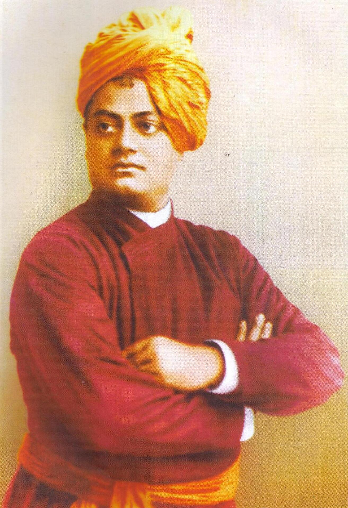

Chicago Speech
Represented Hinduism at the World's Parliament of Religions in Chicago in 1893 and introduced Indian spiritual traditions to a Western audience.
"The Monk Who Inspired the World"

Swami Vivekananda was an Indian Hindu monk, philosopher and spiritual leader. He played an important role in introducing Vedanta and Yoga to the Western world.
He was widely admired for his wisdom, fearlessness, spiritual vision and his efforts to inspire young people and serve humanity.
Swami Vivekananda was born as Narendranath Datta on 12 January 1863 in Kolkata, India. From a young age, he was deeply interested in spirituality, philosophy and the search for truth.
He became a disciple of Sri Ramakrishna Paramahansa, whose teachings had a great influence on his spiritual journey. After becoming a monk, Vivekananda travelled across India and learned about the lives and struggles of its people.
In 1893, he represented Hinduism at the World's Parliament of Religions in Chicago, where his speech introduced Indian philosophy and Vedanta to a wider Western audience. In 1897, he founded the Ramakrishna Mission and dedicated his life to spiritual development and service to humanity.
Represented Hinduism at the World's Parliament of Religions in Chicago in 1893 and introduced Indian spiritual traditions to a Western audience.
Founded the Ramakrishna Mission in 1897 to promote spiritual development, education and service to humanity.
Played an important role in introducing Vedanta and Yoga philosophy to people in the United States and Europe.
Established Belur Math, which became the headquarters of the Ramakrishna Math and Ramakrishna Mission.
Born on 12 January as Narendranath Datta in Kolkata, India.
Met Sri Ramakrishna Paramahansa, who later became his spiritual guru.
After the passing of Sri Ramakrishna, Narendranath and his fellow disciples began their monastic life.
Began travelling across India as a wandering monk and observed the lives and struggles of its people.
Addressed the World's Parliament of Religions in Chicago and introduced Vedanta and Indian philosophy to a Western audience.
Founded the Ramakrishna Mission to promote spiritual development and service to humanity.
Established Belur Math, which became the headquarters of the Ramakrishna Math and Ramakrishna Mission.
Passed away on 4 July at Belur Math at the age of 39.
"Arise, awake, and stop not till the goal is reached."
— Swami Vivekananda